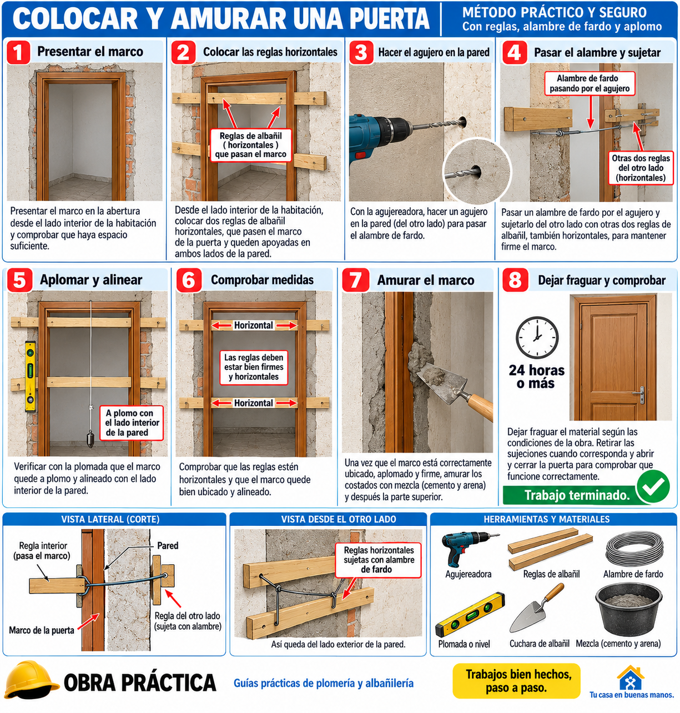

🔧 Plomería
Pérdida de agua
1. Localizar la pérdida: cerrar la llave de paso y revisar uniones, caños, llaves y zonas húmedas.
2. Cortar el tramo: retirar la parte dañada dejando extremos limpios y derechos.
3. Colocar el acople: preparar los extremos según el tipo de caño y colocar el accesorio correspondiente.
4. Termofusión: limpiar y preparar las piezas, calentar con la herramienta adecuada y unir sin girar. Como referencia, en sistemas de PP-R se usa frecuentemente alrededor de 260 °C, pero siempre hay que respetar la temperatura y el procedimiento indicados por el fabricante del sistema.
5. Probar: esperar el tiempo de enfriamiento indicado y abrir el agua lentamente para comprobar que no haya pérdidas.
⚠️ Antes de trabajar, cerrar el suministro de agua. Para instalaciones de gas o trabajos que requieran habilitación profesional, consultar a un profesional autorizado.
🧱 Albañilería
Colocar una abertura o puerta

1. Medir: comprobar ancho, alto y nivel del vano.
2. Presentar la abertura: colocarla en posición y verificar que quede centrada.
3. Poner a plomo: comprobar ambos laterales con plomada o nivel.
4. Amurar: fijar la abertura de manera firme y realizar el relleno con el material adecuado.
5. Revisar: comprobar nuevamente nivel, plomo y funcionamiento antes de terminar.
Mezcla de referencia
3 baldes de arena por 1 balde de cemento, como proporción orientativa para trabajos generales. La mezcla correcta depende del trabajo, del material y de las indicaciones técnicas.
💰 Guía de precios
Los precios deben actualizarse según zona, materiales, dificultad y tiempo de trabajo.
📞 Contacto
¿Necesitás un trabajo de plomería o albañilería?
Obra Práctica — próximamente con contacto y solicitud de trabajos.